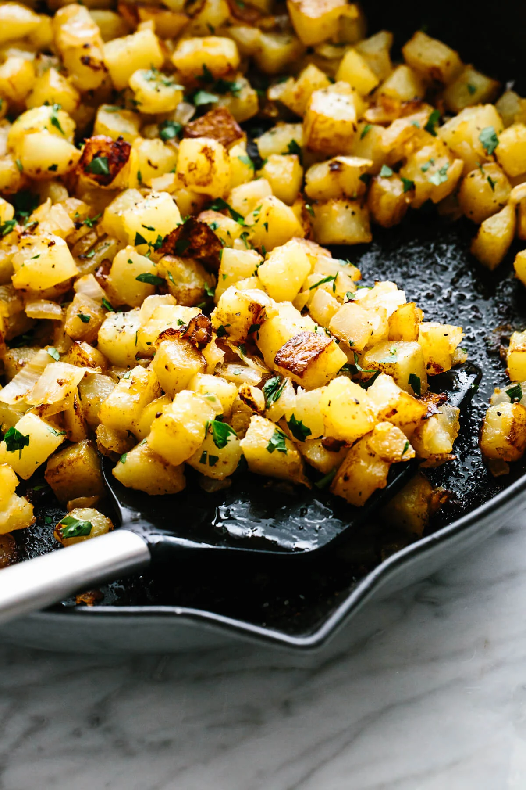

Breakfast Potatoes

Fried Breakfast Potatoes
The perfect addition to any breakfast, hearty fried potatoes! These potatoes are the perfect blend of crispy, salty, and garlicky goodness!
Ingredients
- 4 large russet potatoes
- 1/2 large white onion
- 1/2 stick butter
- 2 tbs garlic powder
- 2 tbs onion powder
- 1 tbs salt
Steps
- Heat a skillet over medium heat while dicing potatoes and onion.
- Place half the butter in the pan and add in the potatoes.
- Give the potatoes a good stir before covering with a lid and letting it cook for five minutes.
- Add onions, onion powder, garlic powder, salt, and the rest of the butter, stirring for two minutes.
- Cover and let cook for an additional 5 minutes.
- Stir and serve hot.
- Enjoy!